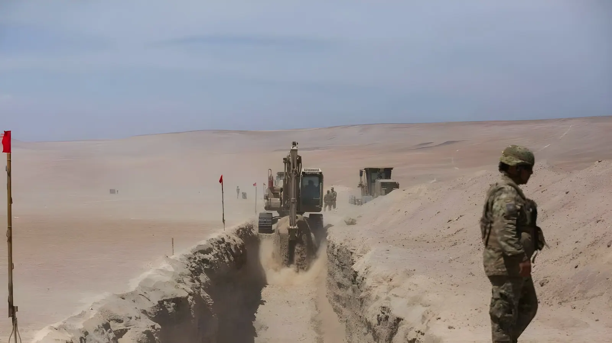

Cinq jours après son investiture, José Antonio Kast a lancé, le 16 mars 2026, la construction de barrières physiques sur près de 500 kilomètres le long de la frontière nord avec le Pérou et la Bolivie. Ce « Plan Escudo Fronterizo » — fossés de trois mètres de profondeur, murs de cinq mètres, drones et radars — divise profondément les populations frontalières et suscite une vive réaction diplomatique à Lima. Analyse d'une mesure aussi symbolique qu'ambivalente.
La frontière terrestre Chili-Pérou s'étend sur 160 kilomètres, de l'océan Pacifique jusqu'au tripoint avec la Bolivie. Longtemps considérée comme l'une des plus intégrées d'Amérique du Sud — les villes jumelles d'Arica (Chili) et de Tacna (Pérou) entretiennent des flux commerciaux et humains quotidiens considérables —, elle est devenue, depuis le milieu des années 2010, l'un des principaux points d'entrée irrégulière vers le Chili. Des centaines de milliers de Vénézuéliens, mais aussi des Colombiens, des Équatoriens et des Haïtiens y ont transité, souvent après avoir traversé le Pérou et la Bolivie.
Cette pression migratoire s'est doublée d'une hausse de la criminalité dans les régions du nord chilien — Arica, Tarapacá, Antofagasta —, où des gangs vénézuéliens, notamment le Tren de Aragua, ont établi des réseaux de trafic de drogues, d'armes et d'êtres humains. C'est ce terreau sécuritaire que José Antonio Kast a exploité tout au long de sa campagne, en promettant une « zanja física » pour stopper les flux irréguliers.
Le dispositif annoncé par le gouvernement Kast comprend plusieurs volets. En premier lieu, le creusement de tranchées de trois mètres de profondeur dans les zones les plus vulnérables — soit 60 kilomètres en priorité, sur un total projeté de 500. Ces fossés sont conçus pour rendre physiquement impossible le passage de véhicules et difficile celui des piétons. Viendront ensuite des murs de barbelés et des structures en béton pouvant atteindre cinq mètres de hauteur.
Le volet technologique est également central : le Plan prévoit l'installation de caméras infrarouges, de détecteurs de mouvements, de radars et de drones patrouilleurs aux points névralgiques. La présence permanente des forces de police est requise pendant la durée des travaux, tandis qu'à terme, la surveillance sera transférée à l'armée chilienne. En parallèle, un état d'urgence a été déclaré dans les régions frontalières, conférant à l'armée des prérogatives étendues de contrôle des personnes et des espaces.
Investiture de José Antonio Kast. Déclaration immédiate de l'état d'urgence dans les régions frontalières du nord. Déploiement de 3 000 militaires.
Kast se rend personnellement à Arica — à 2 000 km de Santiago — pour lancer le chantier. Conférence de presse devant une excavatrice creusant une tranchée au poste frontalier de Chacalluta. Annonce d'un délai de 90 jours pour la phase prioritaire.
Le président péruvien José María Balcázar réagit publiquement, comparant le projet au Mur de Berlin. Le chancelier péruvien Hugo de Zela indique que Lima ne prendra pas de mesures officielles tant que les travaux restent côté chilien.
Réunion des chancelleries chiliennes et péruviennes. Accord pour un échange d'informations bilatéral sur les flux migratoires. Création d'un groupe de travail conjoint à compétences élargies.
Selon le commissaire Alberto Soto, l'avancement des travaux atteint 20 %, avec 12 kilomètres de tranchées complétés sur les 60 prioritaires. Le coût global n'a pas encore été communiqué officiellement.
La réaction de Lima a été immédiate mais mesurée. Le président péruvien José María Balcázar a comparé la construction à un retour « aux temps du Mur de Berlin », évoquant les échecs historiques des politiques de fermeture. Tout en affirmant respecter le droit souverain du Chili à contrôler son territoire, il a souligné l'importance du dialogue bilatéral et laissé ouverte la voie de la négociation, rappelant que le ministre des Affaires étrangères péruvien Hugo de Zela avait assisté à l'investiture de Kast.
Le chancelier péruvien a précisé que Lima ne prendrait pas de mesures de rétorsion tant que les infrastructures resteraient du côté chilien de la frontière. Cette posture pragmatique n'en dissimule pas moins des inquiétudes réelles : les autorités de la région de Tacna ont déclaré l'état d'urgence, craignant un « effet entonnoir » qui concentrerait les migrants refoulés sur le territoire péruvien, aggravant les tensions sociales déjà présentes.
La frontière Arica-Tacna n'est pas seulement un point de passage pour les migrants — c'est l'un des espaces d'échange commercial les plus dynamiques de la région. De nombreux Péruviens se rendent quotidiennement à Arica pour travailler, tandis que des Chiliens traversent vers Tacna pour y faire des achats ou recourir à des soins médicaux moins coûteux. Les commerçants des deux côtés de la frontière redoutent que les nouvelles mesures n'alourdissent les contrôles au point de perturber ce tissu économique transfrontalier.
Irene Flores, commerçante péruvienne interrogée par l'AFP au poste de Chacalluta, résume l'inquiétude de nombreux acteurs économiques locaux : si la mesure doit s'appliquer à l'immigration irrégulière, elle souhaite qu'une souplesse soit maintenue pour les échanges commerciaux légaux. Pour l'heure, le gouvernement chilien n'a pas précisé les modalités qui s'appliqueront aux corridors commerciaux officiels.
| Indicateur | Situation | Enjeu |
|---|---|---|
| Longueur frontière terrestre CL-PE | 160 km | Courte mais très poreuse |
| Irréguliers au Chili (est. off.) | 337 000 | Cible principale du Plan |
| Tranchées prioritaires | 60 km | 20 % réalisés (avr. 2026) |
| Taux d'homicides CL (2025) | 5,4/100 000 | Parmi les plus bas d'Am. lat. |
| État d'urgence déclaré à Tacna (PE) | Mars 2026 | Crainte d'afflux côté péruvien |
« Aujourd'hui, nous commençons à freiner la migration irrégulière. »
— José Antonio Kast, devant l'excavatrice de Chacalluta, 16 mars 2026« La frontière s'étend sur des centaines de kilomètres. Je ne vois pas comment une tranchée va résoudre le problème de fond de l'immigration. »
— Manuel Pérez, Chilien de 50 ans, interrogé à Tacna (AFP, mars 2026)« Il faut éviter de revenir aux temps où l'on construisait le Mur de Berlin. »
— José María Balcázar, président du Pérou, mars 2026Les experts criminologues et les organisations de défense des droits humains s'accordent à reconnaître la puissance symbolique du geste, tout en mettant en doute son efficacité pratique. Les réseaux de passeurs s'adaptent en permanence aux obstacles physiques, explorant de nouvelles routes dès lors qu'un point de passage est fermé. Un rapport cité par Le Monde (mai 2026) relevait que des bandes criminelles observaient déjà le chantier « pour voir comment le contourner ».
Par ailleurs, le Chili avait déjà creusé des tranchées similaires en 2022 à la frontière avec la Bolivie, sans que cela entraîne une réduction durable des entrées irrégulières. Ces précédents alimentent le scepticisme de ceux qui, comme Manuel Pérez à Tacna, voient dans le « Plan Escudo Fronterizo » davantage une réponse politique à l'opinion publique chilienne qu'une solution structurelle au phénomène migratoire.
Le « Plan Escudo Fronterizo » de Kast s'inscrit dans une tendance régionale plus large : face à des flux migratoires sans précédent en Amérique latine, plusieurs gouvernements — de droite comme de gauche — ont durci leurs politiques frontalières. Ce qui distingue le cas chilien, c'est l'ampleur de l'infrastructure projetée, sa charge symbolique assumée et la rapidité avec laquelle elle a été lancée — cinq jours après l'investiture. Entre efficacité sécuritaire douteuse, impact économique sur les échanges Arica-Tacna et risques humanitaires côté péruvien, le mur chilien pose, au fond, une question que ses partisans comme ses critiques ne peuvent esquiver : peut-on résoudre une crise migratoire structurelle avec du béton et des barbelés ?
Cinco días después de su investidura, José Antonio Kast lanzó el 16 de marzo de 2026 la construcción de barreras físicas a lo largo de casi 500 kilómetros en la frontera norte con Perú y Bolivia. El «Plan Escudo Fronterizo» —zanjas de tres metros de profundidad, muros de cinco metros, drones y radares— divide profundamente a las poblaciones fronterizas y provoca una fuerte reacción diplomática en Lima. Análisis de una medida tan simbólica como ambivalente.
La frontera terrestre Chile-Perú se extiende 160 kilómetros, desde el océano Pacífico hasta el tripunto con Bolivia. Considerada durante mucho tiempo una de las más integradas de América del Sur —las ciudades gemelas de Arica (Chile) y Tacna (Perú) mantienen flujos comerciales y humanos diarios considerables—, se ha convertido, desde mediados de los años 2010, en uno de los principales puntos de entrada irregular hacia Chile. Cientos de miles de venezolanos, colombianos, ecuatorianos y haitianos la han cruzado, a menudo tras atravesar Perú y Bolivia.
Esta presión migratoria se ha visto acompañada de un aumento de la criminalidad en las regiones del norte chileno —Arica, Tarapacá, Antofagasta—, donde bandas venezolanas, en particular el Tren de Aragua, han establecido redes de tráfico de drogas, armas y personas. Es sobre este caldo de cultivo que José Antonio Kast construyó su campaña electoral, prometiendo una «zanja física» para detener los flujos irregulares.
El dispositivo anunciado por el gobierno Kast comprende varios componentes. En primer lugar, la excavación de zanjas de tres metros de profundidad en las zonas más vulnerables —60 kilómetros en fase prioritaria, sobre un total proyectado de 500. Estas zanjas están diseñadas para hacer físicamente imposible el paso de vehículos y difícil el de peatones. A continuación, se construirán muros de alambre de púas y estructuras de hormigón de hasta cinco metros de altura.
El componente tecnológico es igualmente central: el Plan prevé la instalación de cámaras infrarrojas, detectores de movimiento, radares y drones de patrulla en los puntos más sensibles. La presencia permanente de las fuerzas de policía está exigida durante los trabajos, mientras que a largo plazo la vigilancia se transferirá al Ejército chileno. Al mismo tiempo, se ha declarado un estado de excepción en las regiones fronterizas, que otorga al Ejército amplias facultades de control de personas y espacios.
Investidura de José Antonio Kast. Declaración inmediata del estado de excepción en las regiones fronterizas del norte. Despliegue de 3.000 militares.
Kast se desplaza personalmente a Arica —a 2.000 km de Santiago— para dar el pistoletazo de salida. Rueda de prensa ante una excavadora que abre una zanja en el paso fronterizo de Chacalluta. Anuncia un plazo de 90 días para la fase prioritaria.
El presidente peruano José María Balcázar reacciona públicamente, comparando el proyecto con el Muro de Berlín. El canciller Hugo de Zela indica que Lima no tomará medidas mientras las obras permanezcan en territorio chileno.
Reunión de las cancillerías chilena y peruana. Acuerdo para el intercambio bilateral de información migratoria. Creación de un grupo de trabajo conjunto con atribuciones ampliadas.
Según el comisionado Alberto Soto, el avance alcanza el 20%, con 12 kilómetros completados de los 60 prioritarios. El coste global no ha sido comunicado oficialmente.
La reacción de Lima fue inmediata pero moderada. El presidente peruano José María Balcázar comparó la construcción con un retroceso hacia «los tiempos en que se construía el Muro de Berlín», evocando los fracasos históricos de las políticas de cierre. Al tiempo que afirmaba respetar el derecho soberano de Chile a controlar su territorio, subrayó la importancia del diálogo bilateral y dejó abierta la vía de la negociación, recordando que el canciller Hugo de Zela había asistido a la investidura de Kast.
El canciller peruano precisó que Lima no tomaría medidas de represalia mientras las infraestructuras permanecieran en el lado chileno de la frontera. Esta postura pragmática no oculta sin embargo preocupaciones reales: las autoridades de la región de Tacna han declarado el estado de emergencia, temiendo un «efecto embudo» que concentraría a los migrantes devueltos en territorio peruano, agravando las tensiones sociales ya existentes.
La frontera Arica-Tacna no es solo un punto de paso para los migrantes: es uno de los espacios de intercambio comercial más dinámicos de la región. Muchos peruanos cruzan a diario a Arica para trabajar, mientras que los chilenos van a Tacna a hacer compras o a recibir atención médica a menor coste. Los comerciantes de ambos lados temen que las nuevas medidas endurezcan los controles hasta perturbar este tejido económico transfronterizo.
Irene Flores, comerciante peruana entrevistada por la AFP en Chacalluta, resume la preocupación de muchos actores económicos locales: si la medida se aplica a la inmigración irregular, pide que se mantenga la flexibilidad para los intercambios comerciales legales. Por el momento, el gobierno chileno no ha precisado qué modalidades se aplicarán a los corredores comerciales oficiales.
| Indicador | Situación | Implicación |
|---|---|---|
| Longitud frontera terrestre CL-PE | 160 km | Corta pero muy porosa |
| Irregulares en Chile (est. of.) | 337 000 | Objetivo principal del Plan |
| Zanjas prioritarias | 60 km | 20% realizados (abr. 2026) |
| Tasa de homicidios CL (2025) | 5,4/100 000 | De las más bajas de Am. lat. |
| Estado de emergencia en Tacna | Mar. 2026 | Temor de afluencia en Perú |
« Hoy empezamos a frenar la migración irregular. »
— José Antonio Kast, ante la excavadora de Chacalluta, 16 de marzo de 2026« Son muchos kilómetros de límite y siento que una zanja no soluciona de base el problema de la inmigración. »
— Manuel Pérez, chileno de 50 años, entrevistado en Tacna (AFP, marzo de 2026)« Hay que evitar volver a los tiempos en que se construía el Muro de Berlín. »
— José María Balcázar, presidente de Perú, marzo de 2026Los expertos en criminología y las organizaciones de derechos humanos reconocen la potencia simbólica del gesto pero cuestionan su eficacia práctica. Las redes de traficantes se adaptan constantemente a los obstáculos físicos, buscando nuevas rutas en cuanto se cierra un paso. Un reportaje citado por Le Monde (mayo de 2026) señalaba que bandas criminales ya observaban el chantier «para ver cómo rodearlo».
Además, Chile ya había excavado zanjas similares en 2022 en la frontera con Bolivia, sin que ello trajera una reducción duradera de las entradas irregulares. Estos precedentes alimentan el escepticismo de quienes, como Manuel Pérez en Tacna, ven en el «Plan Escudo Fronterizo» más una respuesta política a la opinión pública chilena que una solución estructural al fenómeno migratorio.
El «Plan Escudo Fronterizo» de Kast se inscribe en una tendencia regional más amplia: frente a unos flujos migratorios sin precedentes en América Latina, varios gobiernos —de derecha e izquierda— han endurecido sus políticas fronterizas. Lo que distingue el caso chileno es la amplitud de la infraestructura proyectada, su carga simbólica asumida y la rapidez con que se lanzó —cinco días después de la investidura. Entre eficacia en materia de seguridad dudosa, impacto económico en los intercambios Arica-Tacna y riesgos humanitarios en el lado peruano, el muro chileno plantea, en el fondo, una pregunta que sus partidarios y sus críticos no pueden esquivar: ¿puede resolverse una crisis migratoria estructural con hormigón y alambradas?